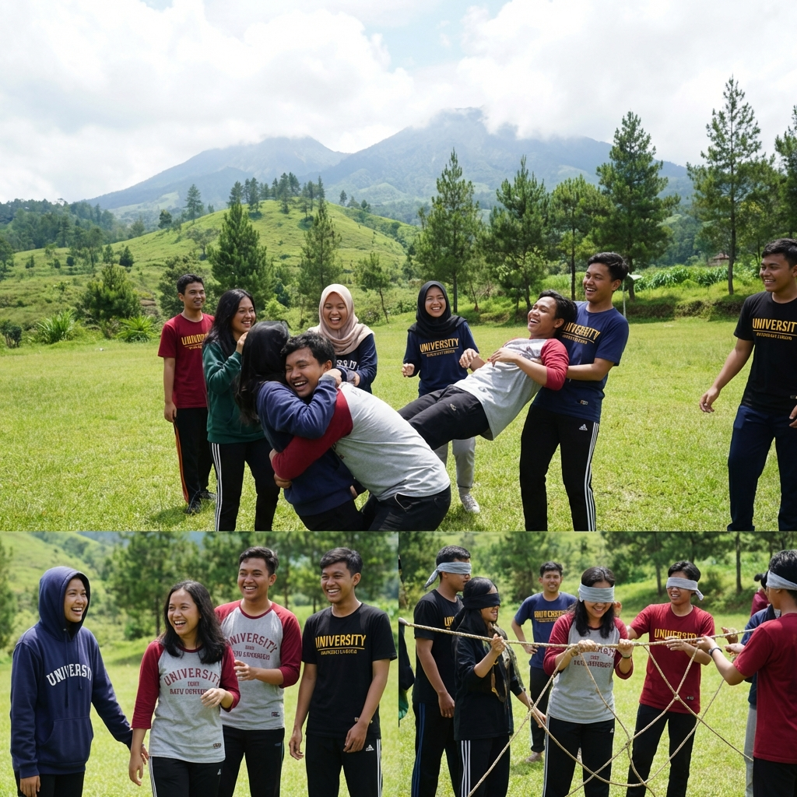

Salah satu villa makrab di Batu Malang dengan fasilitas kolam renang dan pemandangan pegunungan yang menakjubkan.
Memilih villa yang tepat untuk makrab mahasiswa memang bukan perkara mudah. Selain harus mempertimbangkan kapasitas dan fasilitas, budget yang terbatas sering menjadi kendala utama bagi panitia makrab. Namun jangan khawatir, di Batu Malang terdapat banyak pilihan villa makrab murah yang tidak murahan — tetap nyaman, pemandangannya indah, dan fasilitasnya memadai untuk menunjang berbagai kegiatan makrab.
Batu Malang memang dikenal sebagai surganya villa dan penginapan di Jawa Timur. Mulai dari villa sederhana dengan harga terjangkau hingga villa mewah dengan private pool, semuanya tersedia di kota pegunungan ini. Yang membedakan Batu dengan tempat lain adalah kombinasi unik antara harga bersaing dengan kualitas lingkungan alam yang luar biasa. Bayangkan, villa dengan harga Rp 2-3 juta per malam sudah mendapatkan pemandangan gunung yang menakjubkan!
Kriteria Villa Ideal untuk Makrab Mahasiswa
Sebelum memilih villa, penting untuk memahami kriteria apa saja yang harus dipenuhi agar makrab berjalan lancar dan nyaman. Berikut beberapa kriteria villa ideal untuk makrab:
Kapasitas yang Memadai
Villa untuk makrab harus mampu menampung seluruh peserta dengan nyaman. Sebagai patokan, pastikan villa memiliki kapasitas minimal sesuai jumlah peserta. Untuk makrab kelompok kecil (20-30 orang), cari villa dengan 5-8 kamar tidur. Untuk kelompok besar (50-100 orang), pertimbangkan untuk menyewa 2-3 villa yang berdekatan atau villa dengan kapasitas jumbo.
Pastikan juga villa memiliki ruang bersama yang cukup luas untuk kegiatan indoor seperti sesi sharing, games malam, atau sekadar berkumpul bersama. Ruang tamu atau aula yang besar sangat penting untuk menunjang kegiatan kelompok.
Fasilitas Pendukung
Villa makrab yang ideal sebaiknya memiliki fasilitas berikut:
- Halaman atau lapangan luas — untuk kegiatan outbound dan games outdoor
- Dapur bersama — untuk masak bersama atau menyiapkan makanan
- Area parkir yang memadai — terutama jika peserta membawa kendaraan pribadi
- Kamar mandi yang cukup — minimal rasio 1 kamar mandi untuk 5-8 orang
- Area campfire — spot terbuka untuk api unggun
- Sound system atau speaker — untuk musik dan pengumuman
- Listrik stabil — terutama untuk area yang berada di lokasi terpencil
"Villa makrab yang baik bukan yang paling mahal, tapi yang paling sesuai dengan kebutuhan dan jumlah peserta. Dengan budget yang tepat, makrab tetap bisa seru dan berkesan!" — Tim Gemilang Makrab
Lokasi Aman dan Nyaman
Keamanan menjadi prioritas utama saat memilih villa makrab. Pastikan villa berada di lokasi yang aman, memiliki pagar atau pembatas area, dan tidak terlalu dekat dengan jalan raya. Lingkungan yang tenang dan asri sangat mendukung suasana makrab yang kondusif. Selain itu, pastikan akses menuju villa cukup baik agar bus atau kendaraan besar bisa masuk dengan aman.
Baca Juga
Rekomendasi Villa Makrab Murah di Batu
Berdasarkan pengalaman kami melayani berbagai event makrab, berikut rekomendasi kawasan dan tipe villa makrab murah di Batu yang cocok untuk mahasiswa:
Villa di Kawasan Songgoriti
Kawasan Songgoriti menjadi favorit utama untuk makrab karena lokasinya yang strategis dan pemandangan yang luar biasa. Villa-villa di sini umumnya dikelilingi pepohonan hijau dan udara yang sangat sejuk. Harga sewa villa di Songgoriti berkisar antara Rp 2 juta hingga Rp 6 juta per malam tergantung kapasitas.
Keunggulan villa di Songgoriti antara lain dekat dengan sumber air panas alami, area outbound yang luas, dan akses mudah ke pusat kota Batu. Untuk makrab 30-50 orang, biaya per orang bisa ditekan hingga hanya Rp 50.000-100.000 untuk sewa villa saja. Sangat ramah kantong mahasiswa!

Kegiatan team building yang dilakukan di halaman villa makrab di kawasan Batu Malang.
Villa di Kawasan Junrejo
Junrejo merupakan kawasan yang relatif lebih baru untuk wisata, namun memiliki banyak villa dengan harga yang sangat kompetitif. Villa-villa di Junrejo umumnya lebih modern dan baru, dengan fasilitas yang cukup lengkap. Harga sewa berkisar Rp 1.5 juta hingga Rp 5 juta per malam.
Kawasan ini ideal untuk makrab karena memiliki banyak lahan terbuka yang bisa digunakan untuk kegiatan outdoor. Selain itu, Junrejo juga dekat dengan berbagai objek wisata Batu seperti Jatim Park dan Museum Angkut, sehingga bisa dijadikan agenda wisata tambahan.
Villa di Kawasan Punten dan Tulungrejo
Bagi yang mencari suasana pedesaan yang autentik, villa di kawasan Punten dan Tulungrejo bisa menjadi pilihan menarik. Kawasan ini terkenal dengan kebun apel dan perkebunan bunga, memberikan atmosfer yang sangat berbeda dan unik untuk makrab. Villa di kawasan ini biasanya lebih tradisional dengan arsitektur khas Jawa, namun tetap dilengkapi fasilitas modern.
Harga sewa villa di Punten dan Tulungrejo termasuk yang paling terjangkau, berkisar Rp 1.5 juta hingga Rp 4 juta per malam. Keunggulan tambahan adalah peserta makrab bisa melakukan kegiatan petik apel atau kunjungan ke kebun bunga sebagai aktivitas tambahan yang menyenangkan.
Villa di Kawasan Bumiaji
Kawasan Bumiaji berada di dataran yang lebih tinggi dengan suhu yang lebih dingin, cocok untuk makrab yang menginginkan sensasi camping di pegunungan. Villa-villa di Bumiaji umumnya memiliki halaman yang sangat luas, cocok untuk kegiatan outbound berskala besar. Harga berkisar Rp 2 juta hingga Rp 7 juta per malam.
Pemandangan dari villa di Bumiaji sangat spektakuler — hamparan sawah terasering, pegunungan, dan kabut pagi yang menyelimuti lembah. Suasana ini sangat Instagram-worthy dan memberikan latar sempurna untuk dokumentasi makrab yang memukau.

Tips Hemat Sewa Villa untuk Makrab
Berikut beberapa tips agar biaya sewa villa untuk makrab bisa lebih hemat:
- Booking di hari kerja — Harga villa di weekday bisa 30-50% lebih murah dibanding weekend
- Booking jauh hari — Early booking biasanya mendapat diskon tambahan 10-20%
- Pilih villa tanpa pool — Villa tanpa kolam renang biasanya jauh lebih murah
- Gabungkan dengan paket makrab — Banyak provider seperti Gemilang Makrab yang menawarkan paket all-in yang lebih hemat
- Negosiasi untuk group besar — Semakin banyak peserta, semakin besar ruang untuk negosiasi harga
- Gunakan dapur bersama — Masak sendiri daripada pesan catering untuk menghemat biaya
- Cek review sebelum booking — Pastikan kualitas villa sesuai dengan harga yang ditawarkan
"Jangan ragu untuk bertanya langsung kepada pemilik villa tentang diskon atau promo khusus untuk mahasiswa. Banyak villa di Batu yang memberikan harga spesial untuk kegiatan akademik!" — Pengalaman panitia makrab
Perbandingan Harga Villa per Kawasan
Berikut perkiraan perbandingan harga sewa villa di berbagai kawasan Batu Malang:
- Songgoriti: Rp 2-6 juta/malam (kapasitas 20-60 orang)
- Junrejo: Rp 1.5-5 juta/malam (kapasitas 20-50 orang)
- Punten/Tulungrejo: Rp 1.5-4 juta/malam (kapasitas 15-40 orang)
- Bumiaji: Rp 2-7 juta/malam (kapasitas 25-80 orang)
Harga di atas adalah estimasi dan bisa berubah sesuai musim dan ketersediaan. Untuk mendapatkan harga terbaik, kami sarankan untuk menghubungi Gemilang Makrab yang akan membantu carikan villa sesuai budget dan kebutuhan Anda.

Suasana campfire yang hangat di area villa makrab, momen paling dinanti saat malam keakraban mahasiswa.
Kesimpulan
Memilih villa makrab murah di Batu Malang bukanlah hal yang sulit jika Anda tahu cara mencarinya. Dengan berbagai pilihan kawasan mulai dari Songgoriti, Junrejo, Punten, hingga Bumiaji, setiap panitia makrab pasti bisa menemukan villa yang sesuai dengan budget dan kebutuhan. Yang terpenting adalah melakukan riset, booking jauh hari, dan tidak ragu untuk bernegosiasi.
Percayakan pencarian villa makrab Anda kepada Gemilang Makrab. Dengan jaringan villa yang luas dan pengalaman melayani ratusan event makrab, kami siap membantu Anda mendapatkan villa terbaik dengan harga paling kompetitif. Hubungi kami sekarang melalui WhatsApp untuk konsultasi gratis!
Pertanyaan yang Sering Diajukan (FAQ)